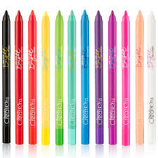
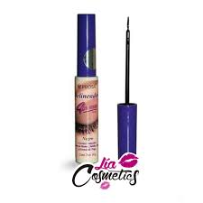
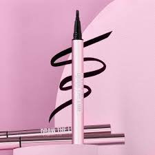
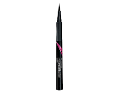
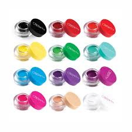
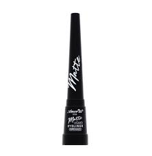

|  | Adquiere este lapiz delineador para cejas de la dulce Kitty marca tu mirada! Te otorga una punta con diseño de borde plano que te otorga trazos precisos con ... MXN 99.90 Disponible |  | compra este hermoso delineador de colores que quedara muy bien en tus looks y le dara un toque especial es de muy buena marca y de muy buena calidad. |
|  | Realza tu mirada con el delineador liquido negro, el cual te ayudar a delinear tus ojos con un negro intenso ademas de darle larga duracion, ... MXN 109.00 Disponible |  | este delineador de plumon facilitara tus delineados sin mancharte y tener un mejor maquillaje limpio con un hermosisimo deliado que resaltara tu mirada |
|  | Contenido: 1.2 ml. Tono: Negro Obten un delineado de alta definicion y color intenso todo el dia. Aplicacion facil y rapida. Acabado mate. MXN 139.90 |  | este gel delineador tiene mas tonos y cobertura que dara un toque diferente en tus maquillajes y podras hacer diferentes delineados con este gel contamos con vairedad de colores |